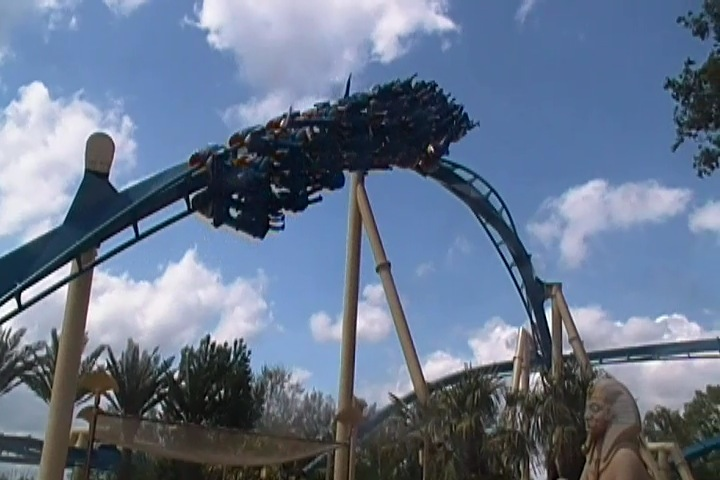
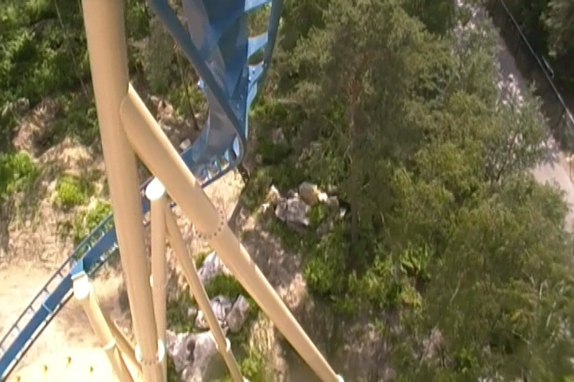
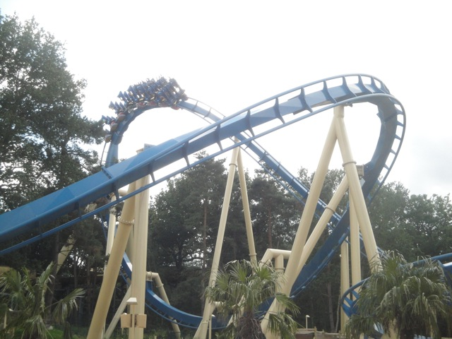

| |
OzIris Review

We're here at Parc Asterix. Today, we'll be reviewing OzIris, the park's B&M Invert. Now, when one is just looking at this ride, it looks f*cking amazing. It looks fast, forceful, and like one of B&Ms finest coasters. It almost looks like Montu. However, sadly, this ride runs far more like Silver Bullet or Talon than Montu. But don't worry. It's still a really fun coaster. After getting in the typical B&M seats, the floor drops and we're off. We begin to climb the lifthill. There's not much of a view to look at. Just farmland. But hey, whatever. We're now at the top. The ride is about to begin. We head down the first drop. Now, this is actually a really fun and fast first drop. It really is a fun, steep, drop and really gives us some nice speed. We then head into this sort of dive loop. It looks really forceful and that it'll have some nice whip. NOPE!!! It's a very smooth floaty inversion, very much like Silver Bullet. But don't worry. Some good stuff is coming up. Next up, we go through this really tight overbanked turn, and to be fair to OzIris. This part of the ride, is actually really forceful. There's definetly some force here. We then go through a vertical loop. It's not insane or anything, but it's got some forces, just not the amount of forces that I really want. Anyways, we dive into the ground and "TAKE THE TUNNEL!!!!". Oh wait, this is an Egyptian themed roller coaster. Better scream it in Arabic. "TAKE THE نفق !!!!". Or since we're actually in France and there's a lot of Islamaphobia going on right now, it's probably best for us to just scream it in French. "PRENDRE LE TUNNEL!!!!". We then head into an Immelmann Loop, and just like the Dive Loop we went through, this one is also incredibly floaty. We then head around a curved hill, no forces or anything. Whatever. But hey. Then we head into another drop. Oh, and look. Another chance for us to scream "PRENDRE LE TUNNEL!!!!". Now the tunnel has a TON of mist inside. So warning, you might actually get wet on this ride. Now in the hot summer days, this is a very pleasent surprise. However, for the entire 2nd half of the ride, my POV had a bunch of water droplets on it. Meh, I still like my OzIris POV. Anyways, moving on. We now move onto a Zero G Roll. And just like on Silver Bullet, there is NO WHIP to this thing AT ALL. In fact, it's almost like a sort of corkscrew. Almost like that first inversion on Tatsu. So that's a real bummer. Whenever inversions like that lack whip, it makes me sad. =( We then head around a turn, through a little straight track, and down a small drop, right into a trench. And hey, we then head right into a heartline spin. Now this one does have a little bit of whip. It's still not a real powerful heartline spin with a ton of whip, but hey. It's still fun, and an improvement. I will admit that I like how low to the ground it is. We then head from that into a low to the ground helix. Yep, OzIris has the Silver Bullet helix effect, where a less forceful B&M will have a powerful and strong helix. And while this isn't the only part of OzIris that's powerful, it still applies to OzIris. We then head around a tight turn and head straight into a brake run. So yeah. That's OzIris. And while it's definetly NOT a return to the days of the crazy forceful B&Ms. However, with that said, amongst the "Forceless" B&M Inverts, OzIris is my favorite one. Both for its cool Egyptian Theming, and also for a couple bonus forceful moments, particarly that overbanked turn that I really like. It's a really fun coaster and one of the best rides at Parc Asterix. Definetly make sure you give it a ride when you visit.
7/10
Location: Parc Asterix
Opened: 2012
Built by: B&M
Last Ridden: June 30, 2012
OzIris Photos



Home
|